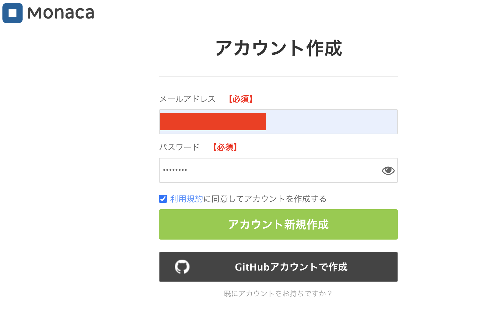

共通資料 · 授業内で行う準備
授業を始めるまでの準備
教材を受け取り、Monacaにログインできる状態と、Flutterの開発環境を使える状態にします。使うのはmacOSです。アプリの作成と実行は、その日の教科書で行います。
準備とダウンロードも授業内で行う
前半はMonaca、後半はFlutterを使います。STEP 1〜3はMonacaの準備です。Flutterの準備は、第7コマの冒頭にSTEP 4〜7を順に始め、ダウンロード待ちの間に先生の案内でMonacaの仕上げを進めます。第8コマでも準備の確認を続けます。家庭でのダウンロードを宿題にはしません。
教材を受け取る
Google Classroomなどで先生が案内したその回のリリースを開き、Assets から学生用ZIPをダウンロードします。名前は hybrid-app-student-materials-日付.zip の形です。GitHubの Source code (zip) は授業用の配布ZIPではありません。
- FinderでダウンロードしたZIPをダブルクリックして展開します。既に同じ名前のフォルダになっていれば、そのフォルダを使います。
- 展開したフォルダを、見つけやすい場所に置きます。例えば
書類の中です。 - 中に
docs、はじめに.txt、VERSION.jsonがあることを確かめます。完成見本が同梱されている版にはsamplesもあります。言語を選ぶindex.htmlがある版では、そこから教科書を開けます。 docs/common/setup.htmlをGoogle Chromeで開きます。今読んでいるページが、この共通資料です。
完成見本が配られたら、次の方法で開きます。共通資料だけの版には samples がなくても問題ありません。
| 配布された見本 | 開き方 |
|---|---|
| Monacaの完成プロジェクト | 教科書や先生が案内する取り込み用URLを開きます。samples の中身は、コードを読み比べるための写しです。 |
| Flutterの完成プロジェクト | Visual Studio Code の File → Open Folder… で、samples 内の指定されたプロジェクトフォルダを開きます。pubspec.yaml が入っている階層を選びます。 |
Web基礎・Android・iOSの見本と同じく、自分の作品を分ける
先生の完成見本と、自分で作るプロジェクトは別のものです。自分の作品を配布フォルダの中へ保存すると、教材を入れ替えたときに混ざります。自作の保存先は、その日の教科書で決めます。
更新版は別フォルダに展開します。同じ日に配り直された版は名前が同じになるため、先生の案内を確かめてから入れ替えてください。自分の作品を上書きしません。質問するときは、フォルダ名の日付と VERSION.json の version を伝えます。
通常版Monacaに登録する
Google Chromeで Monacaの公式サイトを開き、ログイン から進みます。この授業は通常版MonacaのFreeプランを使います。ログイン後の開発画面は console.monaca.mobi です。
ログイン から、通常版Monacaへ進みます。通常版のアカウントを既に持っていれば、そのアカウントでログインします。初めて使う人は、ログイン画面からアカウント作成へ進み、次の順に登録します。
- 受信できる自分のメールアドレスと、登録するパスワードを入力します。
- 利用規約など画面の説明を確認し、必要な項目を入力して、
アカウント新規作成を選びます。 - 入力したメールアドレスの受信箱を開き、Monacaからの確認メールにあるリンクを開きます。
- 登録を完了し、通常版Monacaへログインします。プロジェクトの一覧が見えれば、このSTEPは完了です。

Web基礎の編集環境との違い
Web基礎ではMacに置いたHTMLやCSSを編集しました。Monacaでは、ログインしたアカウントのプロジェクトを、Monaca クラウド IDEで編集します。アカウントを取り違えると、自分のプロジェクトが見つからなくなります。
Monaca Educationのアカウントや Monaca for Study は、この授業では使いません。確認メールが届かなければ、迷惑メールのフォルダと入力したアドレスを確認し、解決しないときは先生へ知らせてください。確認メールについては Monacaの公式FAQでも案内されています。
プロジェクトの空きを確かめる
Freeプランでは、同時に持てるプロジェクトは3個までです。登録直後は はじめてのMonacaアプリ が自動で1個作られるため、そのままなら空きは2個です。
- プロジェクト一覧で、今あるプロジェクトの名前と個数を確かめます。
はじめてのMonacaアプリがあり、まだ自分で編集していなければ、授業で先生と確認してから削除し、空きを確保します。- 自分で編集した作品がある場合は削除せず、一覧を先生に見せます。自動作成のものか分からない場合も、そのまま相談してください。
Android Studio・Xcodeのプロジェクトとの違い
Macのフォルダを増やすときとは違い、Monacaはアカウントの3枠を使います。完成見本を取り込んだときにも1枠を使うので、URLを何度も開く前に、今あるプロジェクトと空きを確かめます。
この授業では、1つのプロジェクトを何回かの授業で育てます。見本をすべて取り込んで3枠を埋める必要はありません。Freeプランでは作品をZIPへ書き出せないため、自分の作品を削除して空きを作ろうとしないでください。
提出には、通常版Monacaで発行する取り込み用の公開URLを使います。このURLは、見る人のMonacaへプロジェクトを取り込むためのもので、完成アプリをWebで動かすURLではありません。公開と提出の操作は、提出を扱う授業で行います。
Flutter 3.47.5を用意する
ここからは第7コマの授業内で始めるFlutterの準備です。Finderの アプリケーション に、Visual Studio Code・Xcode・Android Studio があることを確かめます。XcodeとAndroid Studioは、iOS・Androidの授業で使っているものを使います。見つからない場合は、先生へ知らせてください。
この授業のFlutter SDKは 3.47.5、同梱されるDartは 3.13.4 にそろえます。学生のMacは全員Apple Siliconなので、公式のFlutter SDK archive で、macOS用の Stable、3.47.5、Architectureは arm64 を選びます。
SDKの取得を始め、既存のiOS環境を確認する
SDKのダウンロードを開始したら、完了を待たずに、iOSの授業で使っているシミュレータを確認します。既存の環境が使えれば、新しいiOSランタイムのダウンロードは不要です。全員で最新のランタイムを取得する必要はありません。
Terminalで新しいウィンドウを開き、次を実行します。利用可能なシミュレータを一覧表示する、Xcodeの確認用コマンドです。Flutter SDKの展開前でも実行できます。
xcrun simctl list devices availableiOS の見出しの下に、授業で使っているiPhoneの名前があるかを確かめます。Shutdown は停止中という意味で、ダウンロード不足を示すものではありません。名前があれば、その環境を使う準備を進めます。一覧が空、またはエラーになる場合は、出力を先生に見せてください。ランタイムが不足しているのか、Xcodeの設定やシミュレータの作成が必要なのかを一緒に確認します。コマンドの説明は AppleのXcodeコマンドラインツール資料と、Terminalの xcrun simctl help list で確認できます。
補足：iOS環境が見つからない・実行できないとき
まずiOSの授業で使っているXcodeを開き、初回の追加処理が残っていないか先生と確認します。利用規約や管理者権限の入力で判断できない場合も、先生へ相談します。
先生と確認して、ランタイムの追加が必要になった場合だけ、次のコマンドを使います。数GBの通信が発生することがあるため、授業内で開始します。既存の環境が使える人は実行しません。追加方法は AppleのXcode追加コンポーネントの資料にあります。
xcodebuild -downloadPlatform iOS取得中のTerminalは閉じずに残し、完了をSTEP 7で確認します。
SDKなどのダウンロードを待っている間は、先生の案内でMonacaの仕上げを進めます。SDKのダウンロードが終わったら、次の展開へ進みます。
SDKを置く場所は、版を区別できる新しいフォルダにします。以下は、これから作る保存先の例です。既存のSDKを移動したり上書きしたりしません。
- Terminalで次のコマンドを実行し、保存先
~/develop/flutter-3.47.5を作ります。追加のダウンロードが動いている場合は、別のTerminalウィンドウを使います。
mkdir -p "$HOME/develop/flutter-3.47.5"- Finderの
移動 → フォルダへ移動…に~/develop/flutter-3.47.5を入力し、開きます。 - この中に、ダウンロードしたFlutter 3.47.5のZIPを置いてからダブルクリックし、展開します。既に
flutterフォルダがある場合は上書きせず、先生と中身の版を確認します。 flutterの中にbinがあることを確かめます。この例のSDKの場所は~/develop/flutter-3.47.5/flutterです。
Android SDKとの比較
Androidの開発でAndroid SDKを使うのと同じく、Flutterの開発にはFlutter SDKが必要です。Visual Studio Codeを入れただけではSDKは入りません。DartはこのFlutter SDKに同梱されるため、別のDartを探して入れる必要はありません。
~/Downloads/flutter などに別のFlutterがある人は、そのまま残します。ダウンロード先でZIPをそのまま展開せず、新しい保存先を先に分けるのは、既存のSDKと混ぜないためです。
使うFlutterの場所と版をそろえる
Terminalで flutter と入力したとき、今用意したSDKが選ばれるようにします。ここではmacOS標準のzshを使います。まず、Terminalで次の2行を実行し、設定ファイルをVisual Studio Codeで開きます。
touch "$HOME/.zprofile"
open -a "Visual Studio Code" "$HOME/.zprofile"開いた .zprofile の末尾へ、次の1行を追加して保存します。既に同じ行があれば、重ねて追加しません。他の設定は残します。SDKを別の場所へ置いた場合は、/bin より前の部分を実際の場所へ合わせます。
export PATH="$HOME/develop/flutter-3.47.5/flutter/bin:$PATH"Visual Studio Codeを終了して開き直し、Terminalは新しいウィンドウを開きます。iOSランタイムの追加ダウンロードが動いている場合は、そのTerminalを開いたまま残します。新しいウィンドウで、次の2行を実行します。
which flutter
flutter --version| 確かめる出力 | この手順で期待する内容 |
|---|---|
which flutter | 末尾が /develop/flutter-3.47.5/flutter/bin/flutter のパス。先頭のユーザ名は自分のものになります。 |
flutter --version | Flutter 3.47.5 と Dart 3.13.4 が表示される。 |
Android・iOSのSDK選択との比較
Android StudioやXcodeで使うSDKを選ぶのと同じく、Flutterも使う場所をそろえます。PATH はコマンドを探す場所と順番です。古いFlutterが表示されるときは、SDKを削除せず、まず which flutter の結果を確認します。
授業期間中は flutter upgrade を実行しません。教材と同じ版で進めます。版やパスが合わなければ、その出力を先生に見せてください。PATH設定と再起動の手順は Flutterの公式インストール手順に基づいています。
Visual Studio Codeを準備する
Visual Studio Codeは英語UIで使います。英語表示でなければ、⌘＋Shift＋P でコマンドの一覧を開き、Configure Display Language を探します。English を選び、案内に従って再起動します。詳しくは 公式の表示言語の変更手順で確認できます。
- 公式のFlutter拡張を開き、
InstallからVisual Studio Codeに入れます。Flutter拡張を入れると、Dart拡張も入ります。 - Visual Studio Code の
Extensionsで、FlutterとDartが入っていることを確かめます。 View → Command Palette…を開き、Flutter: Run Flutter Doctorを実行します。Outputに表示された結果で、Flutterが3.47.5になっていることを確かめます。
Android Studio・Xcodeとの比較
Android StudioやXcodeでは、その言語の補完や実行機能がIDEに入っています。Visual Studio Codeでは、Flutter拡張がDartの補完やFlutterの操作を担当します。Terminalで選ばれるSDKと、拡張が使うSDKの版が同じかも確かめます。
Terminalでは3.47.5なのにVisual Studio Codeでは違う版になる場合は、Visual Studio Codeを完全に終了して開き直します。それでも違う場合は、以前のSDK設定が残っていることがあるので、両方の結果を先生に見せます。
デバイス選択は、Flutterプロジェクトを開くと表示されます。ここではまだ新しいプロジェクトを作らず、デバイス選択の項目も探しません。実際の選択と起動は、その日の教科書でプロジェクトを開いてから行います。
iOSの実行環境とダウンロードを確認する
Flutterの初回実行には、STEP 4で確認した既存のiOSシミュレータを使います。ランタイムの追加が必要だった人は、ダウンロード用のTerminalを確認し、エラーで止まっておらず、取得が完了していることを確かめます。第7コマで終わらなかった場合は、第8コマの授業内でも確認を続けます。
Flutter SDKの展開とPATHの設定が済んだTerminalで、Flutter側のiOS用ファイルを取得します。これはiOSの授業で使ったランタイムとは別の、Flutter専用の資材です。必要なものが既に入っていれば、追加取得が省略されます。
flutter precache --ios取得が終わったら、環境の確認結果を表示します。
flutter doctor -vFlutter と Xcode の項目を確認します。エラーや追加の設定が表示されたら、出力を先生に見せてください。Android側の準備は、Androidを使う授業の案内に合わせます。設定項目は Flutter公式のiOS環境設定でも確認できます。
Swiftの実行環境を使う
Flutterでも、iOS向けのビルドとシミュレータにはXcodeの環境を使います。iOSの授業で使っている環境を生かし、Flutter専用の資材を追加します。実際の起動とアプリの実行は、Flutterプロジェクトを作る授業で確認します。そのとき動かない場合も、すぐにランタイムを取得し直さず、先生と原因を確認します。
Android側で時間のかかる取得を分けて考える
Androidでの実行とAPK作成は、後の授業で扱います。必要なものの取得や配布キャッシュの展開も、先生の案内に合わせて授業内で行います。
| 取得するもの | この授業での準備 |
|---|---|
| FlutterのAndroid用ファイル | iOS用とは別に必要になります。Androidを扱う授業で、先生の案内に合わせて用意します。 |
| Gradle本体 | 先生が用意する gradle-9.3.1-bin のキャッシュを授業内で受け取り、指示された場所へ展開・コピーします。保存先は通常 ~/.gradle/wrapper/dists/ の下です。フォルダ階層を変えず、既存の別の版は残します。 |
| Android SDK・ビルド用の依存ファイル | Gradle本体をコピーしてあっても、Android SDKやAndroid Gradle Pluginなどの追加取得が発生します。必要な版は、Androidを扱う授業で先生の案内に合わせます。 |
Flutter側のファイル、Gradle本体、Android SDKやビルド用の依存ファイルは、それぞれ必要になります。1種類のキャッシュをコピーしても、すべての取得が終わるわけではありません。
Gradleのキャッシュは、プロジェクトが使う配布URLと一致している必要があります。-bin.zip と -all.zip は別です。授業でプロジェクトを作ったときに、android/gradle/wrapper/gradle-wrapper.properties の distributionUrl を、配布キャッシュと同じURLにそろえます。ここではまだプロジェクトを作らないため、ファイルの編集は行いません。仕組みは Gradle Wrapperの公式資料で確認できます。
ここまでできたら、準備完了
| 始める授業 | 準備完了の目印 |
|---|---|
| Monaca | 先生が指定した教科書を開ける。通常版Monacaにログインでき、自分の作品を残したまま、必要なプロジェクトの空きを確保できている。 |
| Flutter | TerminalとVisual Studio Codeが同じFlutter 3.47.5を使っている。Flutter拡張とiOSの実行環境を用意し、doctorの結果を確認できている。 |
アプリの作成、コードの編集、Visual Studio Codeでのデバイス選択、実行は、その日の教科書で行います。準備中に実行用の項目が見つからなくても、別のプロジェクトを作る必要はありません。
当日、うまく進まないとき
ダウンロードが終わらない、確認メールが届かない、版が合わないときは、止まったSTEPと画面・出力を先生に見せてください。回線が遅い場合は先生が授業の進め方を調整します。家庭で終わらせる前提で先へ進める必要はありません。パスワードや確認メールのリンクは、教室の共有画面や提出物へ貼り付けません。
質問の例：「STEP 5で、flutter --versionが3.41になりました」。表示された文字をそのまま伝えると、SDKの場所と版を一緒に確かめられます。